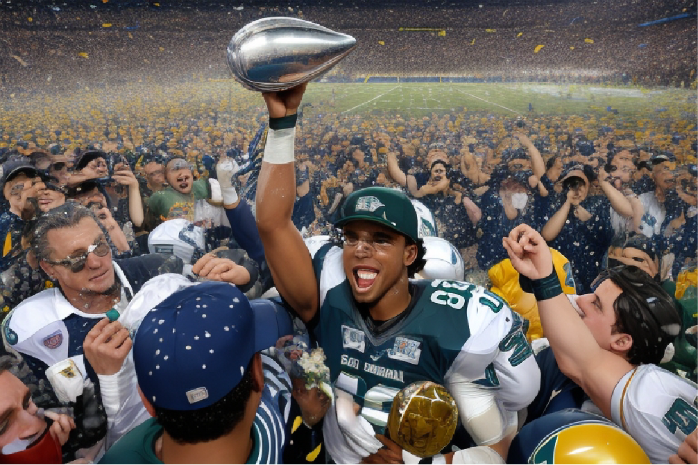

Emocionante Final de la Super Bowl: Los Rayos Cósmicos Conquistan el Trofeo Vince Lombardi
En un emocionante enfrentamiento, los Rayos Cósmicos ganaron la Super Bowl al derrotar a los Fieros Gladiadores en una remontada espectacular con un marcador final de 28-24, gracias a un pase de touchdown en el último segundo de Jake "El Cometa" Johnson. El entrenador John "El Astrónomo" Anderson elogió la valentía de su equipo, convirtiendo este partido en uno de los más emocionantes y memorables en la historia del fútbol americano.
En un emocionante enfrentamiento que mantuvo a los fanáticos del fútbol americano en vilo hasta el último segundo, los Rayos Cósmicos se alzaron victoriosos en la Super Bowl, conquistando el codiciado Trofeo Vince Lombardi. En un partido que quedará en los anales de la historia, los Rayos Cósmicos derrotaron a los Fieros Gladiadores en una remontada espectacular, con un marcador final de 28-24.
El estadio estaba repleto de espectadores emocionados, y el ambiente se volvió eléctrico desde el comienzo del partido. Los Fieros Gladiadores tomaron la delantera en la primera mitad, y parecía que se encaminaban hacia la victoria. Sin embargo, los Rayos Cósmicos demostraron su resistencia y determinación al montar un regreso espectacular en el tercer y cuarto cuarto, anotando tres touchdowns en los minutos finales.
El momento cumbre llegó cuando el mariscal de campo de los Rayos Cósmicos, Jake "El Cometa" Johnson, lanzó un pase de touchdown en el último segundo, sellando la victoria de su equipo. La multitud en el estadio estalló en una ovación ensordecedora mientras los jugadores de los Rayos Cósmicos celebraban en el campo.
El entrenador de los Rayos Cósmicos, John "El Astrónomo" Anderson, elogió a sus jugadores por su valentía y determinación, diciendo: "Hemos demostrado que somos un equipo que nunca se rinde, sin importar cuán difícil se vea la situación".
Este emocionante partido de la Super Bowl quedará grabado en la memoria de los fanáticos del fútbol americano como uno de los más emocionantes y memorables de todos los tiempos.